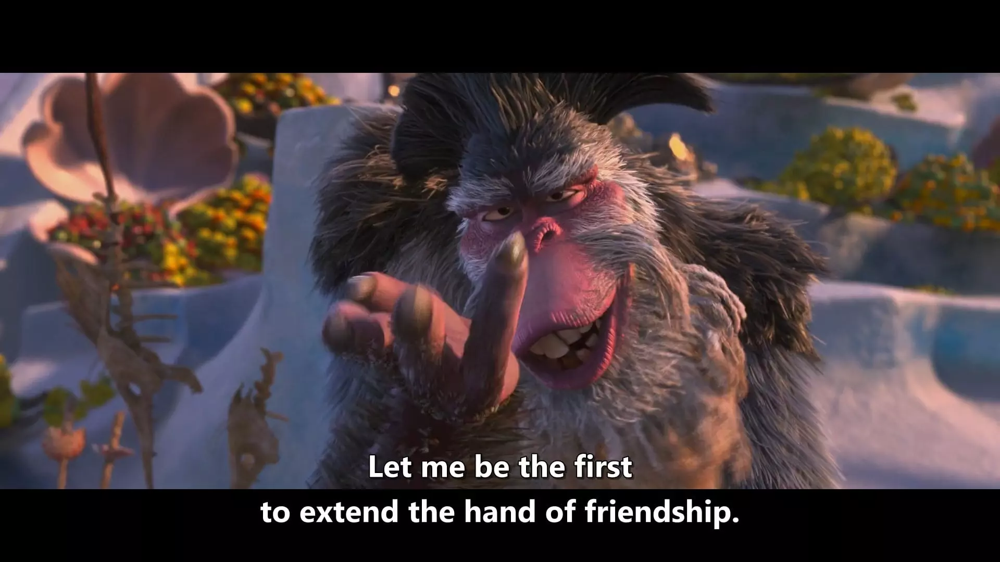
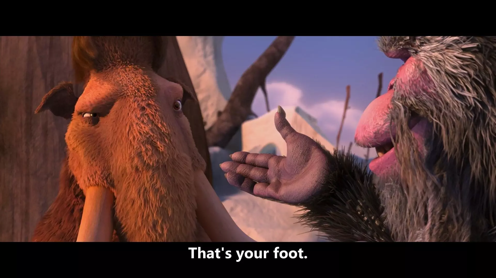
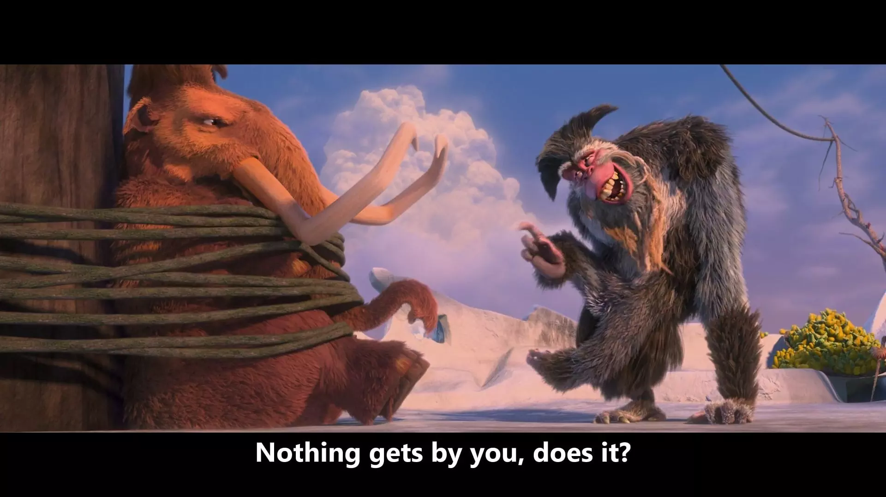

ရောက်တတ်ရာရာ အင်္ဂလိပ်စာ (၄)
သင်ဟာ ကာတွန်းကား (animated movie) တွေကို ကြိုက်နှစ်သက်တဲ့သူဆိုရင် ဝက်သစ်ချသီး (acorn) တစ်လုံးနဲ့ တိုင်ပတ်နေတဲ့ ရေခဲခေတ်က ရှဉ့် (squirrel) တစ်ကောင်ပါတဲ့ ကာတွန်းကားလေးတွေ ကြည့်ဖူးမှာပါ။ သူပါတဲ့ ကာတွန်းကားတွေကို (Ice Age) လို့ခေါ်ပြီး အခုထိ အပိုင်း 6 ပိုင်း ထွက်ထားပြီးပါပြီ။
အခုပြောပြချင်တဲ့အကြောင်းအရာလေးက Ice Age: Continental Drift လို့ခေါ်တဲ့ လေးကားမြောက် Ice Age ဇာတ်ကားထဲက အသုံးအနှုန်းတစ်ခုပဲ ဖြစ်ပါတယ်။ Manny လို့ အမည်ရှိတဲ့ အမွှေးရှည်ဆင် (mammoth) နဲ့ သူ့အပေါင်းအပါတွေဟာ ရေခဲတုံးတစ်တုံးပေါ် မျှောပါသွားကြရင်း Captain Gutt လို့ခေါ်တဲ့ မျောက်ဝံ (ape) ခေါင်းဆောင်တဲ့ ပင်လယ်ဓားပြ (pirate) တွေရဲ့ ဖမ်းဆီးခြင်း ခံခဲ့ရပါတယ်။
Manny သတိမေ့နေရာကနေ သတိပြန်လည်လာတဲ့အချိန် Captain Gutt က "Let me be the first to extend the hand of friendship" လို့ ပြောလိုက်တယ်။ "extend the hand of friendship" ဆိုတာဟာ မိတ်ဖွဲ့သည်လို့ အဓိပ္ပါယ်ရတဲ့ idiom ဖြစ်ပါတယ်။ "ငါကပဲ အရင် မိတ်ဆွေဖြစ်ဖို့ ကမ်းလှမ်းပါရစေ" လို့ ပြောလို့ရပါတယ်။

အဲဒီမှာ Manny က ပြန်ပြောလိုက်တာက "That's your foot" လို့ ဖြစ်ပါတယ်။ ဒီနေရာမှာ စကားလုံးလေးကို ကစားပြီးသုံးသွားတာ (play on words) ဖြစ်ပါတယ်။

"extend the hand of friendship" လို အသုံးမျိုးကို အင်္ဂလိပ်ဘာသာစကားမှာ metaphorical use လို့ ခေါ်ပါတယ်။ တင်စားပြီးသုံးတဲ့အသုံးလို့ ဆိုလိုတာဖြစ်ပါတယ်။ မျက်စိထဲမြင်ကြည့်မယ်ဆို စတွေ့တဲ့အချိန် မိတ်ဆက်တဲ့အခါ လက်ဆွဲနှုတ်ဆက်ဖို့ လက်ကို ကမ်းလိုက်တဲ့သဘောပါ။ အဲဒီလို ရေးထားတဲ့စကားလုံးအတိုင်း အတိအကျဘာသာပြန်တာဟာ (literal meaning) ဖြစ်ပါတယ်။ Captain Gutt က သူ့ကို လက်ဆွဲနှုတ်ဆက်ဖို့ ကမ်းပေးလိုက်တာက လက်မဟုတ်ဘဲ သူ့ခြေထာက်ဖြစ်နေလို့ Manny က "That's your foot" ဆိုပြီး ပြန်ပြောလိုက်ခြင်းဖြစ်ပါတယ်။
အဲဒီအခါ Captain Gutt က "Noting gets by you, does it?" ဆိုပြီး ပြန်ပြောပါတယ်။

get by ဟာ phrasal verb ဖြစ်ပါတယ်။ phrasal verb အထူးပြုအဘိဓာန်နဲ့ advanced learner's dictionary တော်တော်များများမှာ get by ကို "to manage to live or do a particular thing using the money, knowledge, equipment, etc. that you have" ဆိုတာမျိုးပဲ အဓိပ္ပါယ်ဖွင့်ဆိုကြပါတယ်။ "အသက်ရှင်နေထိုင်ဖို့၊ တစ်ခုခုလုပ်ဖို့ ပိုက်ဆံ၊ အသိပညာ၊ ပစ္စည်းကိရိယာ လုံလောက်ရုံသာရှိသည်" လို့ အဓိပ္ပါယ်ရပါတယ်။
ဥပမာ - "How does she get by on such a small income?" သူ ဒီလောက်ဝင်ငွေနည်းနည်းလေးနဲ့ ဘယ်လိုလောက်အောင်စားလဲ။"
"I can just about get by in French." ငါ ပြင်သစ်ဘာသာစကား ထမင်းစား ရေသောက်လောက်တော့ တတ်တယ်
စာရေးသူဆီမှာရှိတဲ့ အဘိဓာန်တွေ တစ်အုပ်ပြီးတစ်အုပ်ရှာတာ နောက်ဆုံး The American Heritage Dictionary of the English Language (5th edition) ထဲမှာ get by ကို "to be unnoticed or ignored by (သတိမထားမိဘဲနေသည်)" လို့ နောက်ထပ် အဓိပ္ပါယ်တစ်ခုဖွင့်ထားတာ သွားတွေ့တယ်။
အဲဒီထဲမှာပေးထားတဲ့ ဥပမာဝါကျလေးကို လေ့လာကြည့်မယ်။
"The mistake got by the editor, but the proof-reader caught it."
အယ်ဒီတာက အမှားကို မမြင်လိုက်ဘူး၊ ဒါပေမယ့် စာပြင်က မြင်လိုက်တယ်။၊
အဲဒီတော့ အပေါ်က "Nothing gets by you, does it?" ဆိုတာကို "မင်းကတော့ အကုန်ကိုမြင်တယ် (သတိထားမိတယ်နော်)" လို့ အဓိပ္ပါယ်ပြန်ဆိုလို့ရပါတယ်။ တစ်နည်းအားဖြင့် "You notice everything/You are very observant." လို့ ဆိုလိုတာဖြစ်ပါတယ်။
ဒီနေရာမှာ တစ်ခုသတိထားရမှာက "သတိမထားမိဘဲနေသည်" လို့ သုံးမယ်ဆို get by ဟာ ရှင်းလင်းချက်မှာ passive အဓိပ္ပါယ်ထွက်နေတာပါပဲ။ "to be unnoticed or ignored by" ဆိုတဲ့ definition ကို သတိထားကြည့်ပါ။ ပြီးတော့ အထက်က ဥပမာဝါကျလေးတွေမှာလည်း "Noting gets by you (You get by nothing မဟုတ်)" "The mistake got by the editor..." လို့ သုံးထားတာကို သတိထားကြည့်ပါ။
အဲဒီလိုမှမဟုတ်ဘဲ get by ကို "သတိမထားမိဘဲနေသည်" လို့ပဲ မှတ်ထားလိုက်မယ်ဆို ကိုယ် ပြန်အသုံးချချင်တဲ့အခါ အသုံးမှားတတ်ပါတယ်။
ဒီလိုမျိုး အဓိပ္ပါယ်မှန်းရခက်တဲ့ အသုံးအနှုန်းလေးတွေကို အပြည့်အဝနားလည်သွားတဲ့အခါ ပြောမပြတတ်အောင် ပျော်ရတယ်မဟုတ်လား။ အင်္ဂလိပ်စာလေ့လာတဲ့အခါမှာ စူးစမ်းလိုစိတ်ရှိဖို့ အင်မတန် အရေးကြီးပါတယ်။ ဒါကို ဒီနေရာမှာ ဘာလို့ ဒီလိုသုံးထားတာလဲ နောက်ထပ် ဘယ်လိုအဓိပ္ပါယ်တွေ ရှိနိုင်ဦးမလဲလို့ ကိုယ့်ကိုယ်ကိုယ်အမြဲမေးပါ။ ကိုယ့်မှာရှိတဲ့ resource တွေကို အပြည့်အဝအသုံးချပါ။ အခုသင်ခန်းစာလေးမှာ get by ကို ပုံမှန်တွေ့နေကျ အဓိပ္ပါယ်နဲ့မဟုတ်ဘဲ သုံးထားတာလေးတွေ လေ့လာခဲ့ကြပြီးပါပြီ။ ဒီနေ့တော့ ဒီလောက်ပါပဲ။ နောက်သင်ခန်းစာတွေမှာ ပြန်ဆုံကြတာပေါ့။
English Learners' Treasure Trove by Win Zaw Tun (Mogok)